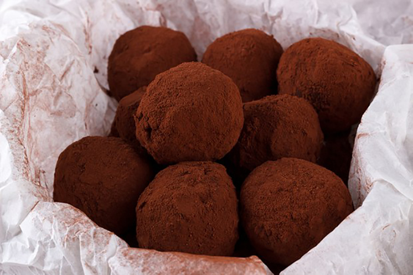

Emanuel’s favorite christmas confection
Supereasy Ribald Rum Balls
This delicious smooth confection is an impressive dessert for the holidays. These are wonderful for parties, and perfect for holiday gifts to your loved ones. A half cup of orange juice plus one teaspoon of freshly grated orange peel can be substituted for the rum in this recipe.
Preparation
- In a large bowl, combine vanilla wafer crumbs, chopped nuts, 3/4 cup confectioners' sugar, and cocoa. Mix in rum and corn syrup. Shape dough into 1 inch balls; roll in confectioners' sugar.
- Store rum balls in an airtight container for 2 to 3 days to develop flavor. Roll them again in confectioners' sugar before serving.
- Enjoy a seemingly endless joy of alcoholicly hazed christmas!